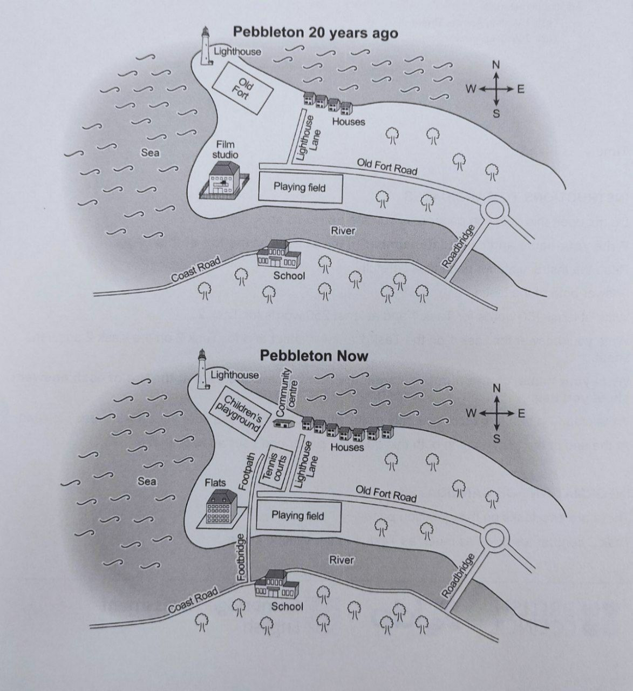

Xaritalardagi o'zgarishlarni tasvirlashda odatda Present Perfect Passive (has been built, have been demolished) ishlatiladi.
Quyidagi Pebbleton shaharchasining 20 yil oldingi va hozirgi xaritasini solishtiring va insho yozing.

PDF fayldagi matnlarni o'qing va testlarni ishlang.
PDF fayldagi savollarni o'qib javoblaringizni yozing.
Quyidagi audiolarni eshitib, matnni to'liq yozib boring.